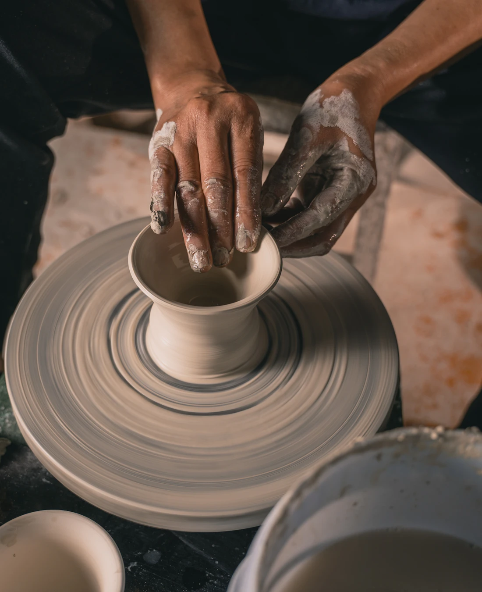

Turismo Nicaragua Conecta
Conectamos el turismo de Nicaragua con productores locales
Descubre lo que se produce aquí y conecta directamente con quienes lo hacen. Una forma más cercana de abastecer tu negocio y dar valor al trabajo local.
- Producción local
- Contacto directo
- Verificación INTUR cuando corresponda

Del origen a nuevas oportunidades.
Tawanki reúne la oferta local y facilita que los negocios turísticos encuentren con quién trabajar.
Conoce el catálogo-
Explora productos locales
Consulta el catálogo público y descubre qué ofrecen productores y artesanos.
-
Encuentra a quien los produce
Entra al directorio con tu cuenta para conocer a los proveedores y su oferta.
-
Inicia una conversación comercial
Solicita una cotización y coordina los detalles directamente con el productor.
Tu espacio en Tawanki
Elige cómo quieres participar. Puedes iniciar sesión o crear tu cuenta desde cada portal.